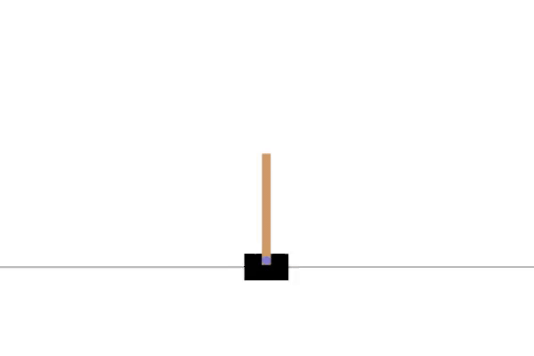
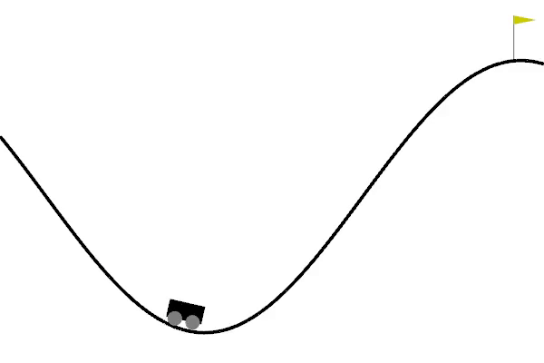
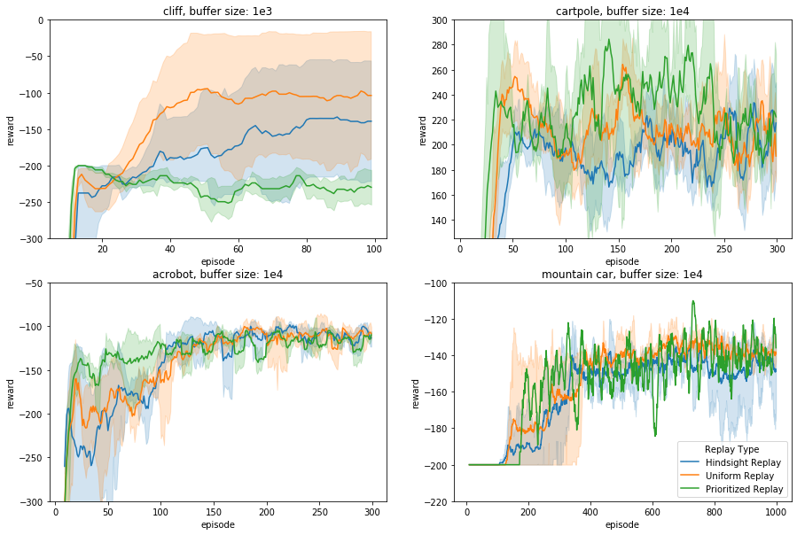

In this blog post we investigate the effect of 3 different forms of experience replay on 4 different environments. As an additional experiment, we also investigate the effect of setting the hyperparameter of these methods to different values.
Q-learning has shown its usefulness on a lot of different tasks, but how does this method scale to more complex issues, like real-world problems? The number of states and actions can grow exponentially, which makes it infeasible to store Q values in a tabular fashion. The reinforcement learning (RL) community has found a solution to this in Deep Q Networks (DQN), where Q-learning is infused with Deep Learning. This is a ‘simple’ idea where we replace the Q Learning’s table with a neural network that tries to approximate Q Values instead. One problem that we face during training DQN’s however, is that in RL, the agent learns from experiences. It uses each experience or sample transitions, e.g. (state, action, reward, new state), to update its internal beliefs. However, when we do this in an on-policy fashion, the data we sample is sequential. So when we feed it to our network, the sequential nature of the data will cause it to have a strong temporal correlation. Neural networks (NNs) were not made with this kind of data in mind. There are two main reasons for this:
These problems can both have a negative impact on the stability of the training process. Luckily, a solution to both problems is found in experience replay. The idea is simple, we only have to store the agent’s experiences in a memory buffer. This way, we can sample from this buffer during training which both breaks the temporal correlation between data samples, and at the same time allows the model to re-train on previous experiences.
Storing previous experiences and training on them multiple times also has an additional benefit as we can now optimally exploit every single sampled transition we have by controlling how and how often it is “remembered”. This means that we can learn more with the same amount of samples i.e. it is more sample efficient. This is especially beneficial in cases where gaining real-world experience is expensive. Thus, experience replay stabilizes the training process and increases the sample efficiency.
Now that we have understood why it is important to maintain a memory buffer, we can think of what is the most optimal way to do this. Various experience replay methods have been developed and they mostly differ in two main aspects. Firstly, which experiences do we store in the memory buffer? And secondly, how do we efficiently sample from this memory buffer? How each method handles these questions will influence different types of environments differently and thus each method is typically developed to handle different types of problems. In this blog post we will look at three different ways to employ experience replay.
Each experience is stored into the buffer and when we reach capacity, we discard our oldest memories. Thus, we keep our most recent memories in the buffer. For sampling, we simply take a random batch of experiences. Each sample has the same probability of being chosen so sample behaviour that is seen more often will therefore also be repeated more and more often.
This method is developed to really exploit samples that display rare or surprising behaviour. The key intuition behind this is that the model can learn more from certain samples than from others, and thus we shouldn’t blindly repeat each of them with equal frequency. Instead, we should prioritize replaying certain samples over others. So how do we determine which samples should be prioritized? Ideally, we would like to know how much the agent can learn from a transition in its current state, but this knowledge is not accessible to us. Luckily, we can approximate this with another metric. Since we are trying to minimize the magnitude of the TD error as an objective function, we can use the absolute TD error |δi| as a proxy of how much priority a sample i should get. Where:
δi = rt + λmaxa ∈ AQθ(st + 1, a) − Qθ(st, at)
Now, to store this information during training, we can simply extend the sample transitions we want to store in our memory buffer with this priority proxy: (state, action, reward, new state, |δi|). When the memory buffer reaches its capacity limit, we simply remove the oldest samples. So now we know which samples to store and how to store them, but we still need to find a way to actually use them as intended. This leads us to the second aspect: How do we sample from the memory buffer? We will have to construct a probability distribution where the samples with higher priorities are more likely to be picked for repetition. To get the right priorities for each sample we use the absolute TD error plus some value ϵ to ensure that each sample in the buffer will be picked with a non-zero probability. We then simply construct a probability distribution as follows:
$$P(i) = \frac{|\delta_{i}|^{\alpha}}{\sum_k |\delta_{i}|^{\alpha}}$$
Now to pick the more useful samples with a higher priority, we just have to sample from this distribution!
Introduced by Openai in this paper, this type of experience replay allows our agent to learn from failed experiences. The intuition behind this is that, even when the agent fails, this doesn’t make the experience completely invaluable, the behavior could still be useful in another context. So we don’t just want to dismiss these experiences altogether! HER solves this problem by adapting the sampled transitions that it stores in memory such that it treats failed experiences as successes given the context in which it is used. So how do we store and adapt samples? Since we are now interested in whether experienced episodes were successful or not, we need to store trajectories into our memory buffer with their goal state G: (S0, G, a0, r0, S1), ..., (Sn, G, an, rn, S′) Now the idea in HER is to pretend for failed experiences that the end state S’ was actually the goal G all along. To do this, we just substitute G with S’ and store this imagined trajectory into memory as well: (S0, S′, a0, r0, S1), ..., (Sn, S′, an, rn, S′) In this alternative reality the agent has reached the goal and got a positive reward for doing so. By storing both the real and the imagined trajectory into memory we can ensure that the agent always gets some positive reward to learn from. As the agent can imagine reaching multiple goals at the end of an episode, the agent can maximally learn from this episode.
As a result, HER can also be effectively used in multi-goal settings. So how do we sample from this memory buffer? This is simple, we just take a random batch of experiences like in ER.
As mentioned earlier, these different forms of experience replay will have a different impact on different types of environments. In this blog post we will focus on three types of deterministic environments with different characteristics:
CliffGridworld-v0 In the cliffworld environment the agent has to move from the starting state (S) to the goal state (G), it is a classic RL example. We would like to test the performance of the different experience replays, across multiple difficulty levels. We chose this environment as an example of a relatively simple environment, although interesting, compared to the others. It has a two-dimensional discrete state space.
Acrobot-v1 Acrobot steps up the difficulty from the cliffworld. The agent has to swing any part of the arm above the line. Here we clearly see that it is a more challenging environment, evident by the fact that it has a six dimensional continuous state space.
This environment requires the agent to balance a pole on a cart, hence the name. It has to do so for as long as possible. It has a 4-dimensional continuous input, of which 2 are of infinite magnitude, and 2 discrete actions, push left and push right. 
In this environment the agent needs to get the cart to the top of the mountain as fast as possible. It does not however have enough momentum to just drive up the mountain. It needs to drive left and right a few times to gain momentum. This environment is tricky because the agent only gets a reward for reaching the top and not while trying to gain momentum.

We will investigate the behaviour of the introduced experience replay methods on the environments we just proposed. This is interesting as the method of experience replay and the type of task it is used on, may heavily influence the performance of the model. For this we form the following hypothesis: we expect PER to perform better on the more complex environment and HER to perform better on the mountain car environment, which has a sparse reward. For the simple environment we think that ER will be sufficient and that using PER or HER might not provide a competitive advantage.
Also, as you recall, we explained earlier that experience replay should have a positive influence on the training stability and the sample efficiency. Thus, we will compare the influence of each method on each environment w.r.t. the number of training steps, samples needed for convergence, and the cumulative reward.
Apart from this, according to this paper by Zhang & Sutton, there is another important component to experience replay which effect has been underestimated: the memory buffer size. They show that for different environments, different buffer sizes are optimal. For example, uniform experience replay does not stimulate the algorithm much to use recent transitions, except by throwing out the oldest experiences when the maximum capacity is reached. However, when the buffer size is set to e.g. 106 then the probability of using recent transitions, once the buffer is reaching maximum capacity, is very small. If too little recent experiences are used, this can negatively effect the performance in which case we would say that the buffer size is too large. Contrary, you could not use enough older experiences i.e. set your buffer size too small as well.
Whether buffer sizes are too large or too small depends on your environment. Thus, we perform an additional experiment, where we will run each form of experience replay on the gridworld environment with a range of different buffer sizes. From these we will use the results from the most optimal buffer size for investigation.
Since the randomness in the architecture can affect the results, we run the model 5 times with different random seeds and report the average and variance over these results.
We use a simple DQN that is trained with the Adam optimizer.
class QNetwork(nn.Module):
def __init__(self, input_dim, num_hidden=512, output_dim):
nn.Module.__init__(self)
self.l1 = nn.Linear(input_dim, num_hidden)
self.l2 = nn.Linear(num_hidden, output_dim)
def forward(self, x):
relu_output = F.relu(self.l1(x))
out = self.l2(relu_output)
return outFor the learning rate α and discount factor γ we first perform a grid search over α = [0.0001, 0.0005, 0.001] and γ = [0.7, 0.75, 0.8, 0.99] for each environment. Since the tasks we train on are very different, we can not just use the hyperparameter values that perform well on one environment and expect it to generalize well to the others. For the first three games it is sufficient to train the agent for 300 episodes, but through experimentation we found that MountainCar needs 1000 episodes to converge.
| α | γ | |
|---|---|---|
| Cliffworld | 0.0001 | 0.8 |
| Acrobot | 0.001 | 0.99 |
| Cartpole | 0.001 | 0.8 |
| Mountain Car | 0.001 | 0.9 |
Thus, we use the same model with different hyperparameter values for each environment, but the model remains constant for each of the ER methods. Since we are interested in the effect of the ER methods in each environment, this is a fair comparison.
The implementation of PER is based on the code from this GitHub. The hyperparameter α controls the level of prioritization that is applied, when α → 0 there is no prioritization, whereas, when α → 1 there is full prioritization. We don’t want to apply full prioritization as it would cause our model to overfit. Therefore, we assign α a value of 0.6 which was found in the original PER paper by using a coarse grid-search.
class PrioritizedER():
def __init__(self, capacity, n_episodes, alpha=0.6, beta=0.4):
self.alpha = alpha
self.beta = beta
self.capacity = capacity
self.beta_increment_per_sampling = 0.001
self.e = 10e-2
self.tree = SumTree(capacity)
def push(self, transition, error):
delta = (abs(error) + self.e) ** self.alpha
self.tree.add(delta, transition)
def sample(self, batch_size):
batch = []
idxs = []
segment = self.tree.total() / batch_size
priorities = []
self.beta = np.min([1., self.beta + self.beta_increment_per_sampling])
for i in range(batch_size):
a = segment * i
b = segment * (i + 1)
s = random.uniform(a, b)
(idx, p, data) = self.tree.get(s)
priorities.append(p)
batch.append(data)
idxs.append(idx)
sampling_probabilities = priorities / self.tree.total() + 10e-5
is_weight = np.power(self.tree.n_entries * sampling_probabilities, -self.beta)
is_weight /= is_weight.max()
return batch, idxs, is_weightFurthermore, it would be costly to store the transitions in a list, as we would have to traverse the whole list and compare all the |δi| values. As a solution, the paper proposes a sum-tree data structure to store the transitions, as a result we now achieve a complexity of Olog N when updating and sampling. We used this code to implement the sum-tree.
The implementation of Hindsight Experience Replay is based on this and this implementation.
Since we are dealing with environments that have only one goal, our implementation is quite simple, as we do not have to change the goal in any non-terminal states. Instead, we only change the achieved value in the end state of an episode. One parameter called ‘replay k’ is introduced which sets the ratio of HER replays versus normal replays in the buffer. We set ‘replay k’ to 4 as that is what is also used by OpenAI in their experiments. Concretely this means that every episode is inserted into the buffer normally, and additionally the same episode is inserted k times (the hindsight replays), with an altered goal with reward 0.
First we’ll look at the behaviour of each type of experience replay in every environment separately. The results are shown for the buffer size that performed best on each environment. Furthermore, if you recall, using experience replay could positively affect the stability of the training process and the sample efficiency. Thus, we will analyze both the variance over the performance and the time it takes for each method to converge. 
In the cliff environment we can see that, in agreement with our hypothesis, the ER method is sufficient to obtain reasonable performance and HER and PER do not provide any competitive advantage. The behaviour of PER is, however, surprising as its performance considerably worse than ER and HER.
In cartpole we observe high variance for all replay types and it’s hard to say which method should be preferred, however, PER seems to learn the fastest albeit with the highest variance. Since after 250 episodes the performance of all converge to approximately the same results, which method should be preferred depends on the objective that we are trying to optimize for. If we want a more stable training process, ER seems to be best, but if we want the most sample efficient method we should choose PER as it converges the fastest.
With acrobot, all replay types converge to similar performances, but PER converges the fastest. Since all methods also have a similar variance, this time around PER is probably the best bet.
Mountain car again exhibits roughly the same performance for each replay type. It seems as though PER can perform slightly better at the cost of high variance.
Furthermore, we could not see a negative effect of the buffer size when only considering buffer sizes of 3000, 10.000 and 30.000. Therefore, we performed an additional experiment where we tested all the sizes described in the paper. Due to time constraints, we only tested this on the GirdWorld environment and the results are shown below.
We can see that for each type of experience replay a buffer size of 1000 performs the best and the higher the buffer size gets, the worse it performs. A buffer size of 100 being the exception, this performed so badly it does not show up in our figures.
The reason for this is that with a higher buffer size, older transitions are used, transitions which were sampled from an older and different policy. This, in combination with the fact that Deep Q Networks make no use of importance sampling, could introduce a bias in the network, which would explain the decrease in performance. The abysmal performance of buffer size 100 is due to the fact that the network is overfitting on the most recent transitions.
In conclusion, the environments we chose, do not seem to be very sensitive to these different types of experience replays. On average ER seems to be sufficient to solve these problems, and implementing more sophisticated methods do not seem worth it. This is not completely unsurprising as PER and HER were specifically developed with more complex and different problems in mind. For example, HER did not perform well on our chosen tasks, but its benefits in the original paper are mostly shown on multi-goal setting which we did not test in this blog post.
Furthermore, we saw that a too small or too big buffer size has indeed a negative impact on the performance. Even so much so that in these environments the buffer size seemed to matter more than the type of ER method that is used. Thus, when using DQN’s it is important to also spend some time on optimizing the buffer size you use! Additionally, we observed that during different stages of training different buffer sizes seemed optimal, it would be interesting to see whether dynamically changing the buffer size could be beneficial. In addition, the paper by Zhang & Sutton also proposes a solution to diminish the negative impact of a suboptimally chosen buffer size. This solution is called combined experience replay (CER), an extension to uniform experience replay. Unfortunately, applying this method was outside the scope of this project. This would also be interesting for further research.